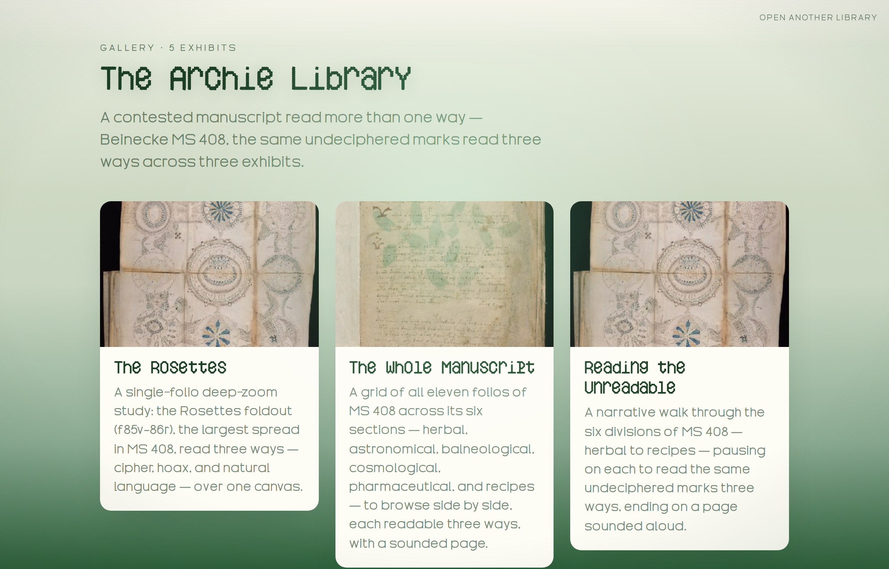

Archie Learn · Onboarding · Step 1 of 6
Meet Archie
No buttons yet — just play with the models below until the shape of the tool clicks. Two minutes here saves an hour of poking around.
Plain and quick. Switch to Advanced for the standards & citation depth (IIIF, web annotations, source refs).Scholar mode: adds how Archie maps onto IIIF & W3C annotations, with source references. Back to Simple any time — your choice sticks across steps.
You bring the media. Archie gives it back as a published, annotated exhibit — built in Studio, read in the Viewer.
Runs in your browser — no servers, no build tools, no lock-in.

1. How everything nests
Archie has exactly four containers, each inside the last. Click in to descend, use the trail to climb back out.
Model · Library › Exhibit › Object › Note. These four words carry the whole mental model — the rest of onboarding hangs off them.
Later, you layer three optional extras on top — nothing to worry about yet:
add any of these on top ↓
2. Where onboarding is taking you
The rest walks one path — from your media to a live exhibit:
Tap a step to see what it's for.
Your first move
The best way to learn Archie is to open it. Launch Studio and choose "Try a template" — that drops you into a Playground with a real exhibit loaded. Don't author anything yet: just find the two zoom scales (the all-Objects Overview and the single-Object surface) and notice the dark light-table. Step 2 picks up right there.
I'm your guide through this. Stuck on a word, or want me to point to exactly where something lives in the real UI? Just ask — that's what makes the next step land.